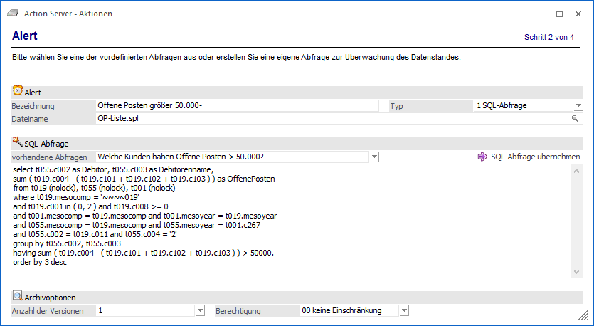
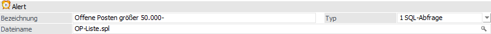
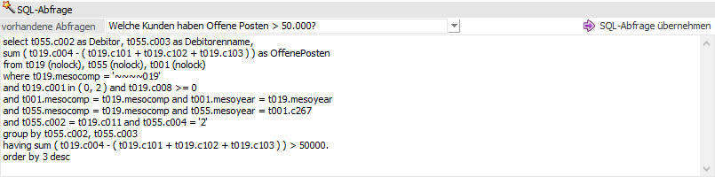
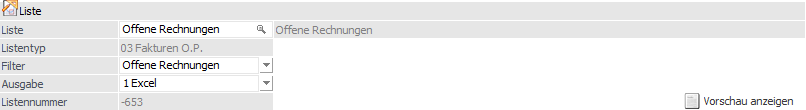
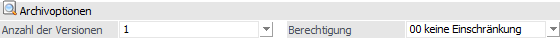

Über diesen Schritt können Warnungen bzw. Meldungen vom Programm ausgegeben werden. Dazu können folgende Einstellungen vorgenommen werden:
Alert

Ø Bezeichnung
Eingabe der Bezeichnung, unter der die Aktion gespeichert werden soll.
Ø Typ
An dieser Stelle kann definiert werden auf welcher Datengrundlage eine Warnung bzw. Meldung ausgegeben werden soll.
ü 1 - SQL-Abfrage
Wenn die
Ausführung des nachfolgend einzugeben SQL-Statements einen oder mehr Ergebnisse
(Datensätze) zurückgibt, so wird ein Alert erzeugt.
ü 2 - Liste
Wenn die Ausgabe der
nachfolgend zu hinterlegenden WinLine LIST-Liste ein oder mehr Ergebnisse
(Datensätze) ausweist, so wird ein Alert erzeugt.
Ø Dateiname
Eingabe des Dateinamens (ggfs. mit einem entsprechenden Verzeichnis). Diese Datei wird im Zuge der Erstellung erzeugt und in dem angegebenen Verzeichnis abgelegt - sofern die Abfrage ein Ergebnis hervorbringt. Die Eingabe dazu kann entweder händisch erfolgen oder über das Lupen-Icon am Ende des Eingabefeldes vorgenommen werden.
SQL-Abfrage

Wurde der Typ "1 - SQL-Abfrage" gewählt, so steht dieser Bereich zur Verfügung.
Ø SQL Abfrage
Hier kann in Folge entweder aus der Auswahlliste eine vorgefertigte SQL-Abfrage ausgewählt und mit dem "SQL-Abfrage übernehmen"-Button in das große Eingabefeld übernommen werden. Alternativ kann aber auch ein frei definiertes Select-Statement im großen Eingabefeld eingetragen werden, wobei hier die Ersetzungen "mesocomp = '~~~~'" und "mesoyear = yyyy" auch entsprechend vorgenommen werden. Hier können auch mehrere Statements mit "go" hintereinander ausgeführt werden.
Achtung
Wenn dieser Schritt mit dem VOR-Buttons bestätigt wird, erfolgt auch eine Prüfung des Select-Statements. Sind Fehler vorhanden, werden diese auch mit einer entsprechenden Meldung angezeigt.
Liste

Wurde der Typ "2 - Liste" gewählt, so steht dieser Bereich zur Verfügung.
Ø Liste
An dieser Stelle kann die Liste, welche Grundlage für den Alert sein soll, ausgewählt werden.
Ø Listentyp
Abhängig von der Liste wird an dieser Stelle der Typ der Liste angezeigt.
Ø Filter
Abhängig von der gewählten Liste kann hier ein Filter für die Ausführung der Action Server-Aktion hinterlegt werden.
Ø Ausgabe
Hier kann definiert werden, ob die WinLine LIST-Liste als SPL-Datei oder Excel-Datei ausgegeben werden soll.
Ø Listentyp
An dieser Stelle wird die Listennummer der gewählten Liste angezeigt.
Archivoptionen

Ø Anzahl der Versionen
Hier kann eingestellt werden, wie viele Versionen von Archiveinträgen erstellt werden, bevor das Programm beginnt, die bestehenden Einträge zu überschreiben.
Ø Berechtigung
Über diese Option kann bestimmt werden, welche Berechtigungsstufe das so erstellte Archivdokument bekommen soll.
Nach der Definition der Aktionsdetails erfolgt im nächsten Schritt die Angabe zu "Benutzer und Mandant".